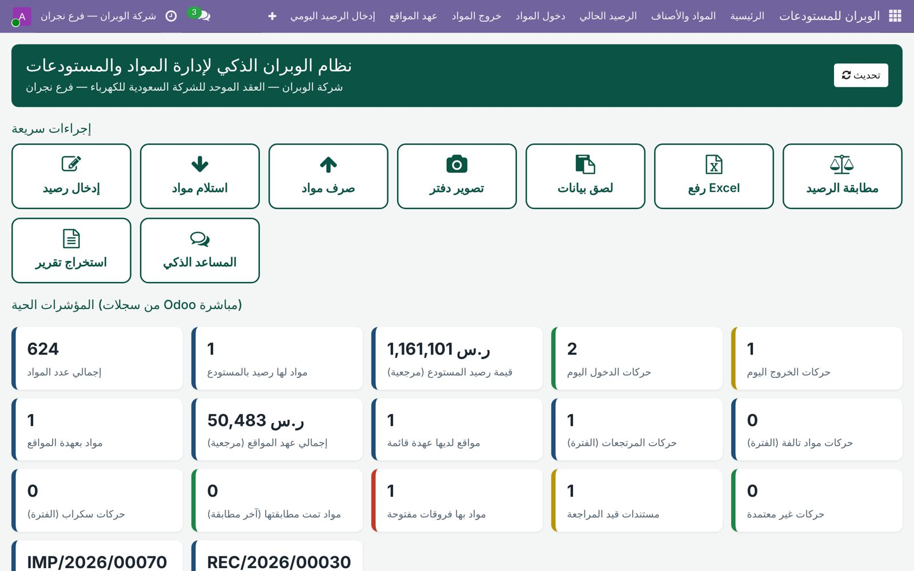
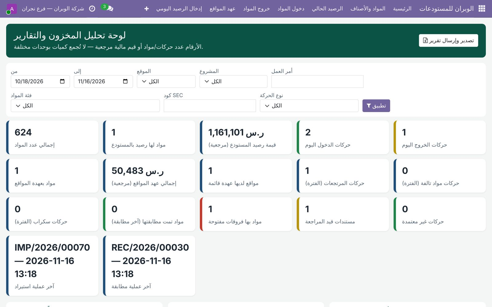
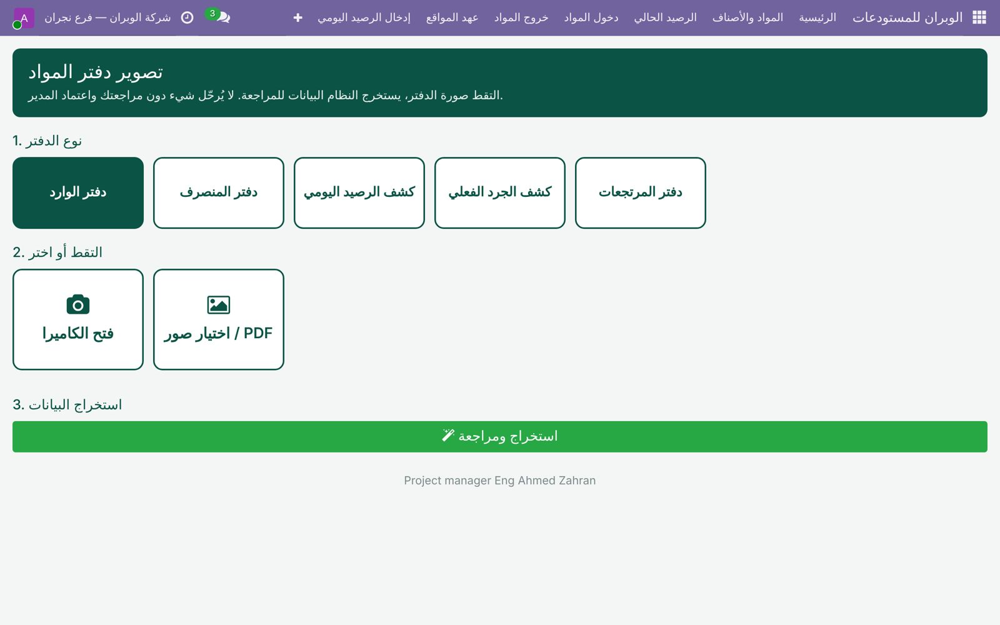
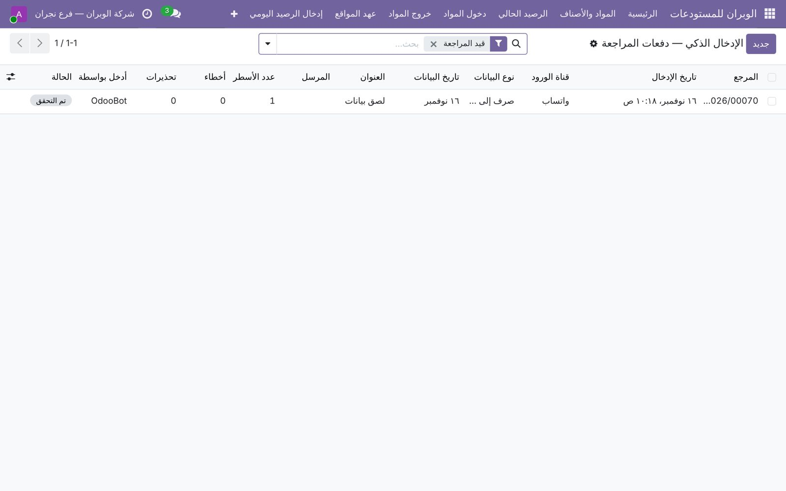
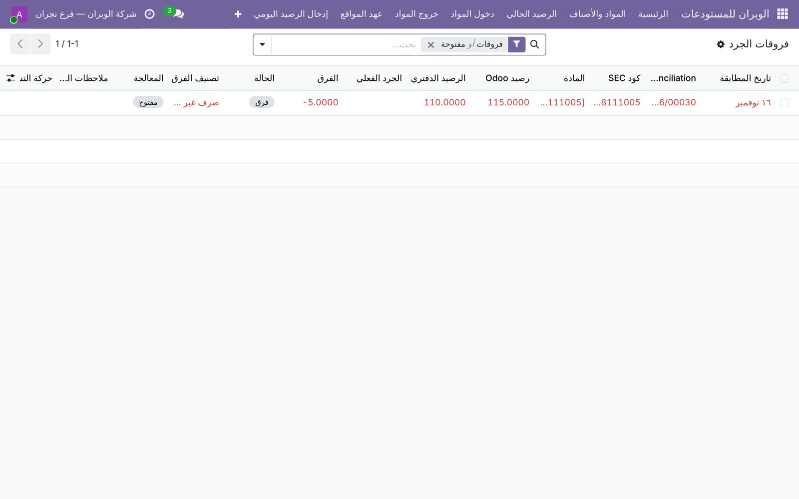
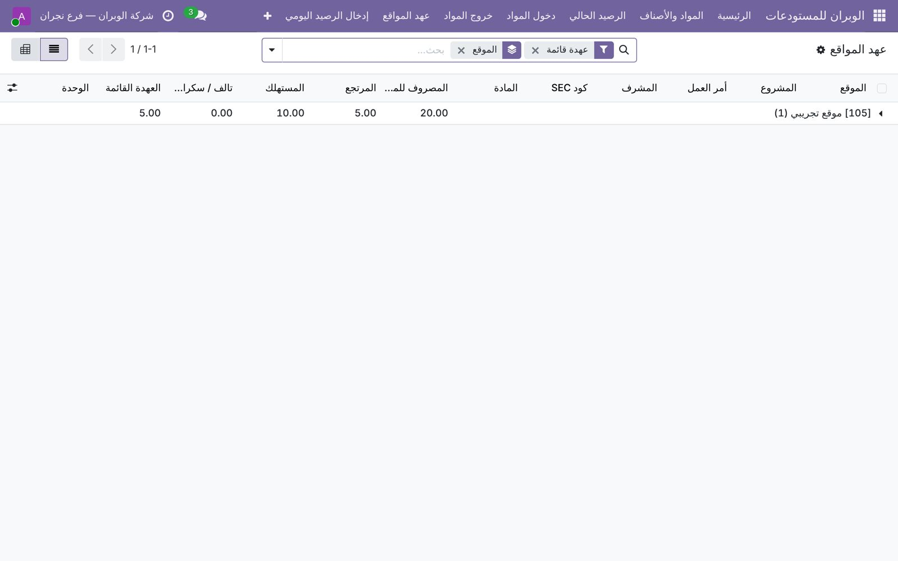
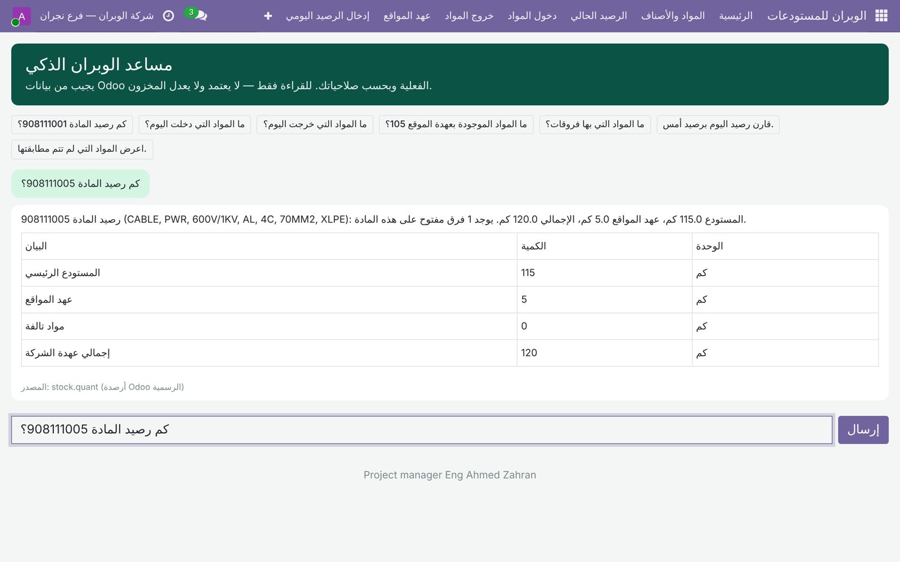
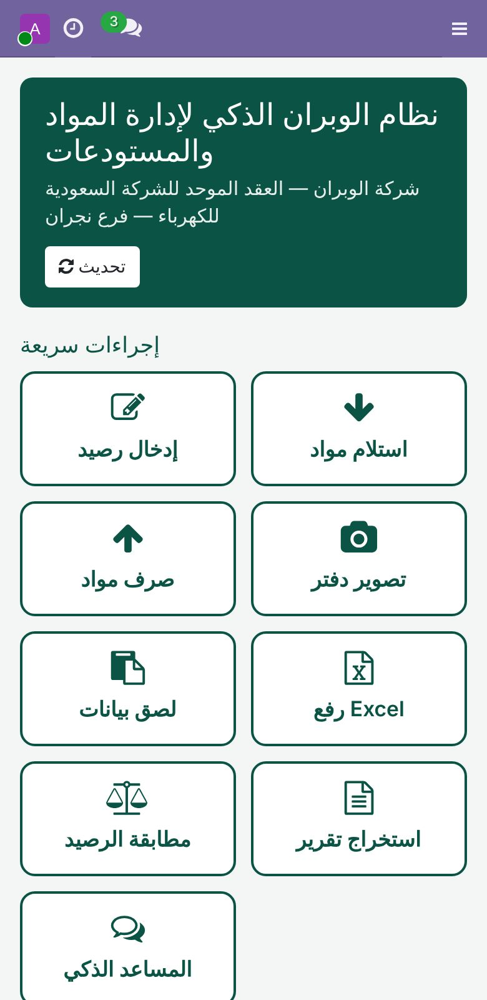

Al Wabran Smart Inventory — إضافة Odoo 19 Community باسم alwabrn_warehouse
شركة الوبران · العقد الموحد للشركة السعودية للكهرباء · فرع نجران








| الميزة | الحالة | ملاحظة |
|---|---|---|
| كتالوج المواد (624 مادة / 41 فئة)، الحركات، العهد، المطابقة، الصلاحيات، سجل التدقيق | منفذة ومختبرة | 34 اختباراً آلياً — 0 فشل |
| لصق البيانات، استيراد Excel/CSV، واتساب اليدوي، تقارير Excel الـ18، الجدولة | منفذة ومختبرة | |
| الواجهة العربية، الكاميرا، الرسوم، PDF | منفذة ومجربة يدوياً | لم تجرب على جوال فعلي بعد |
| OCR | بقيود | Tesseract للنص المطبوع (عربي/إنجليزي). خط اليد يحتاج مزود AI Vision |
| WhatsApp Business · Gmail/Outlook OAuth · AI Vision | بانتظار بيانات الاعتماد | الموصلات مكتوبة ومختبرة بمحاكاة؛ لم تربط بالخدمات الحقيقية |
| إرسال التقارير بالبريد | يحتاج خادم بريد صادر | المنطق وسجل الإرسال جاهزان |
git clone https://github.com/az3919131-ops/store-wabran.git cd store-wabran cp deploy/.env.example .env # غيّر كلمات المرور docker compose -f deploy/docker-compose.yml --env-file .env up -d --build # ثم افتح http://localhost:8069
ملف «المواد الموحدة 2021.xlsx» غير مرفوع للمستودع العام لاحتوائه على أسعار العقد — يُرفع من داخل النظام: الإعدادات ← استيراد كتالوج المواد.